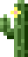

@keithjgrant
- Developer
- Intercontinental Exchange/New York Stock Exchange
- Author
- CSS in Depth, Manning Publications (2017)
Ems for font-size
Based on inherited font-size
.parent {
font-size: 16px;
}
.parent > .child {
font-size: 1.2em; /* 19.2px */
}
Font-size vs other properties
Same declared value; different computed value
.tile {
font-size: 1.2em; /* 19.2px */
margin: 1.2em; /* 23.04px */
padding: 1.2em; /* 23.04px */
border-radius: 1.2em; /* 23.04px */
}
Solution: rem
‚ÄúRoot em‚Äù—relative to font size of root element (<html>)
Recommendation
By default, use:
- rem
- font-size
- px
- border-width
- em
- padding, margin, border-radius
When in doubt, us ems
Side quest!
Use unitless numbers for line-height
- Units: a fixed computed value inherits
- Unitless: adapts to changes in descendant font sizes
“Use relative units
for font-size”

There’s more to ems than just accessibility
- More accurate
- Simpler code
- Better flexibility
[desired size] / [base size]
14px / 16px = 0.875em
18px / 14px = 1.2857em
24px / 13π = STOP IT
Math :(
The Elements of Typographic Style,
Robert Bringhurst
Beautiful typography is about ratios
Common approach to web typography:
Use a scalar...
...to calculate px font sizes...
...to reverse back out to an em scalar ü§î
Don’t micromanage
your CSS
Delegate responsibility to it
“Can you make this margin 3px taller?”
Two options:
- Do the conversion yourself
- Teach the other party ems
Resizable
modules
Resizing px is tedious
.tile {
border: 2px solid white;
padding: 7px 15px;
border-radius: 5px;
margin-bottom: 15px;
font-size: 16px;
}
.tile__title {
font-size: 14px;
text-transform: uppercase;
}
.tile--small {
padding: 4px 10px;
border-radius: 3px;
margin-bottom: 10px;
font-size: 10px;
}
.tile--small > .tile__title {
font-size: 8px;
}
Use rem for global sizing
Use em for local sizing
Scalable modules
.tile {
border: 2px solid #000;
padding: 0.6em 1.2em;
border-radius: 0.3em;
margin-bottom: 1em;
font-size: 1rem;
}
.tile__title {
font-size: 0.8em;
text-transform: uppercase;
}
Scalable shapes
.dropdown__toggle::after {
content: "";
position: absolute;
right: 1em;
top: 1em;
border: 0.3em solid;
border-color: black transparent transparent;
}
Scalable icons/images
.twitter > img {
height: 1em;
width: 1em;
vertical-align: -0.1em;
}

SVG FTW!
Scalable shadows
a:link {
text-decoration: none;
box-shadow: inset 0 -0.1em 0 0 #cef;
transition: box-shadow 0.2s ease-in-out;
color: #346;
}
a:hover {
box-shadow: inset 0 -1.2em 0 0 #cef;
}
It's a secret
to everybody
Scale for each breakpoint
:root {
font-size: 0.8em;
}
@media (min-width: 35em) {
:root {
font-size: 1em;
}
}
@media (min-width: 50em) {
:root {
font-size: 1.25em;
}
}
Viewport-relative units
- vw—% of viewport width
- vh—% of viewport height
- vmin—smaller of vh/vw
- vmax—larger of vh/vw
Adaptive code
CSS Variables
:root {
--font-color: black;
}
.inverse {
background-color: black;
--font-color: white;
}
.tile {
color: var(--font-color);
border-color: var(--font-color);
}
Color functions (future spec)
.alert {
color: blue;
background-color: color(currentColor lightness(+50%));
border: 1px solid currentColor;
}
.alert--danger {
color: red;
}
.alert--warning {
color: orange;
}
hue, saturation, lightness, red, green, blue,
whiteness, blackness, tint, shade, blend, contrast
demo (PostCSS)
A consistent hierachy
Jump in with
both feet
Ems are most powerful when you fully embrace them
CSS in Depth
manning.com/books/css-in-depth
50% off code: mlgrant2